Method
RAFT flow gives per-patch velocity and acceleration. A language-and-motion mask keeps task-relevant tokens. Conditional flow matching rolls them forward until uncertainty says stop. The frozen OpenVLA decoder never sees the stale frame.

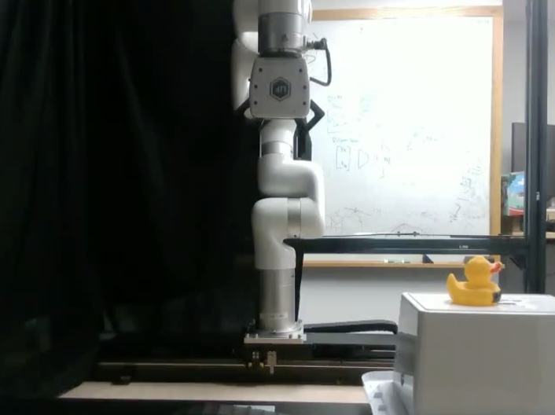
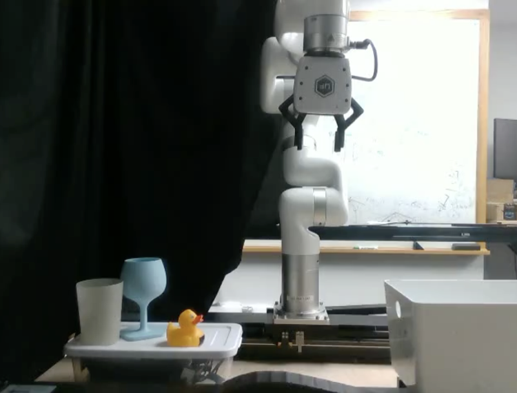
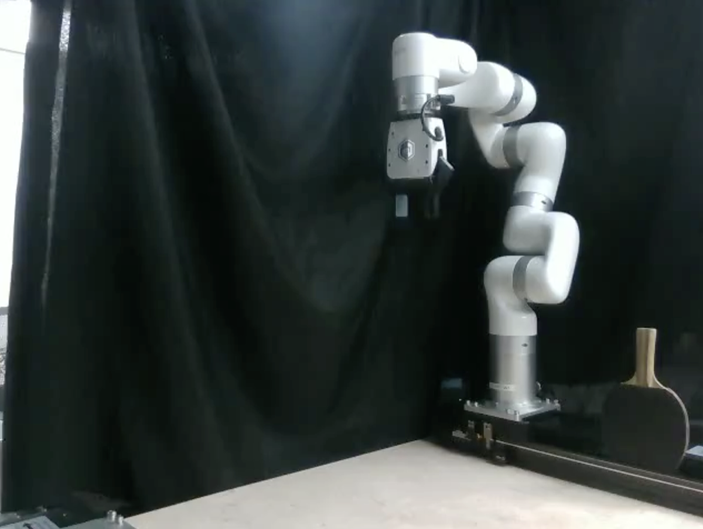
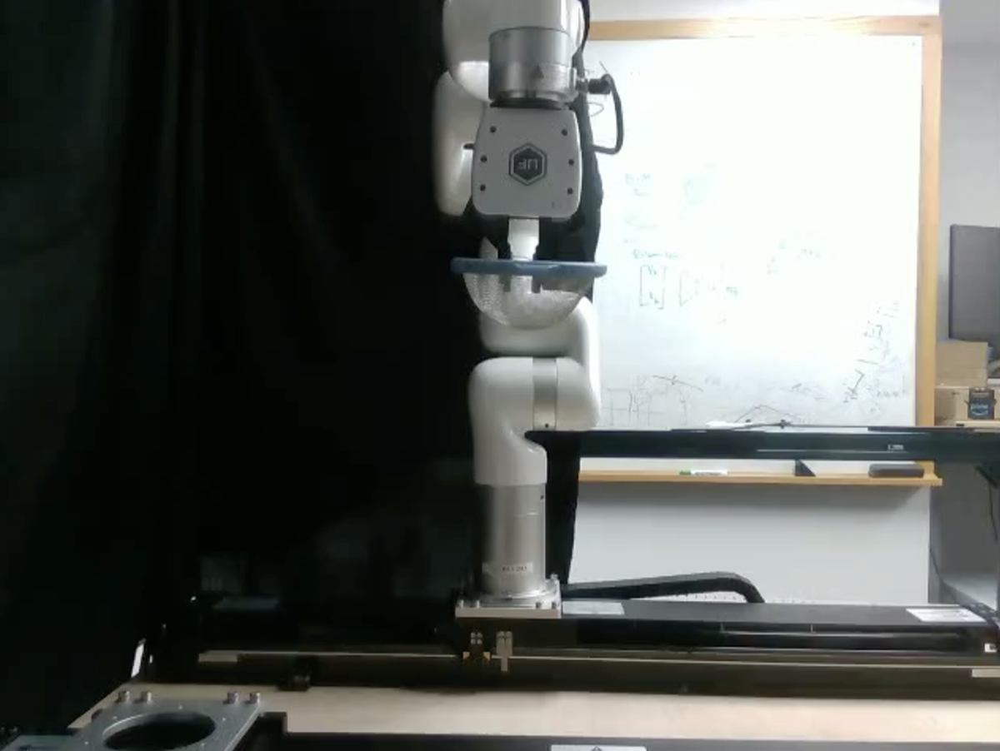
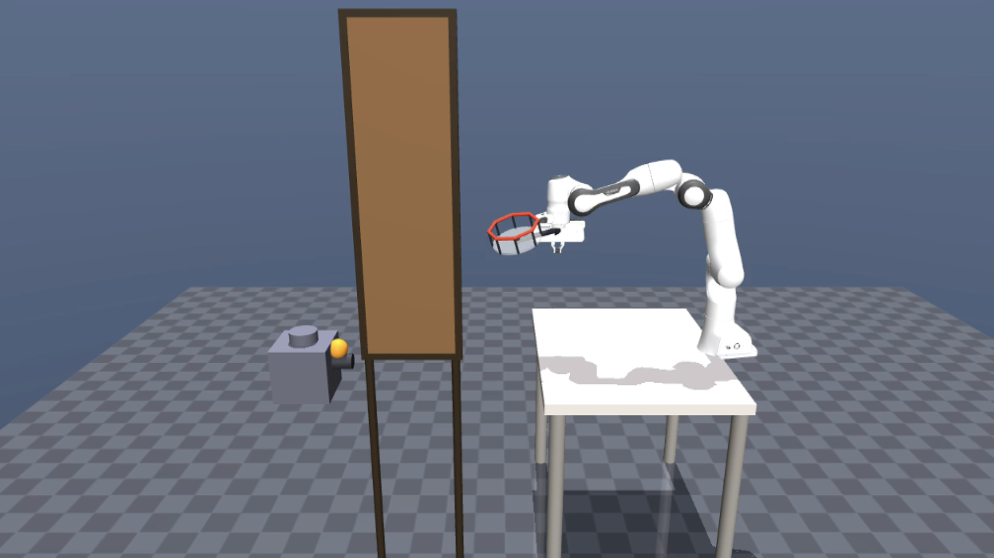
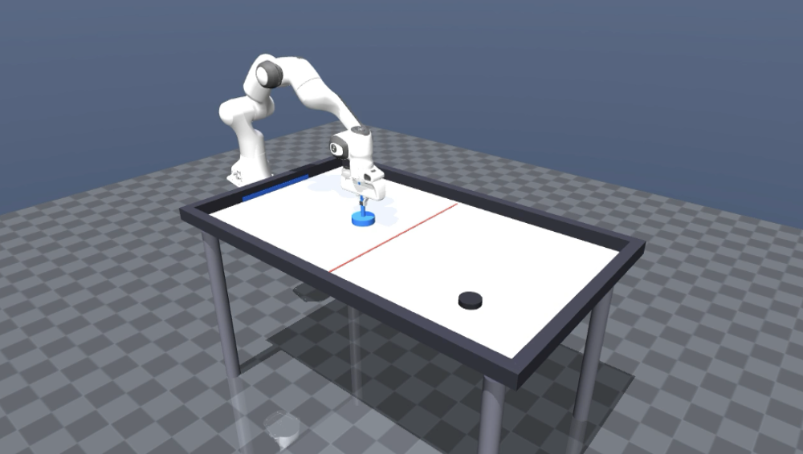
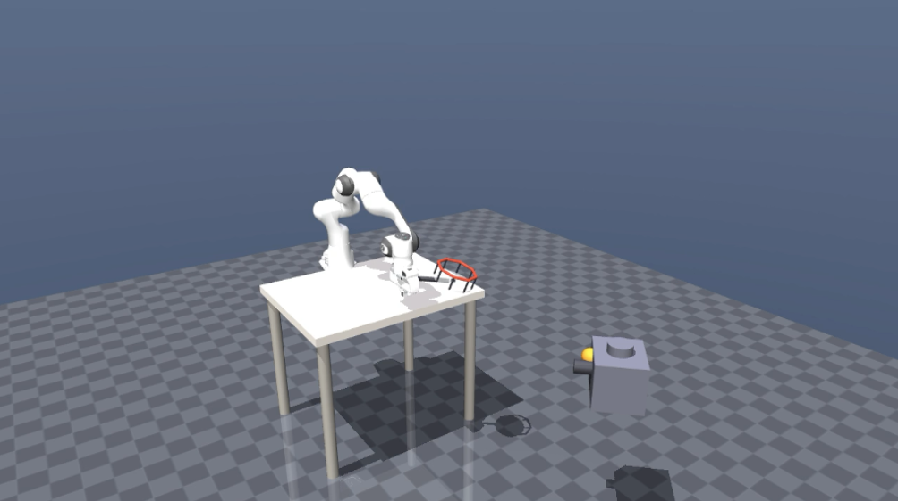
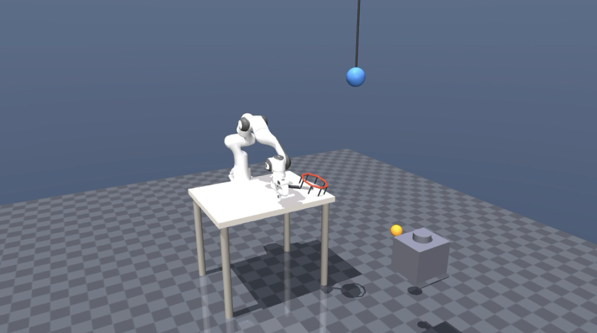
Vision-Language-Action (VLA) models fail when objects move during execution. They map the current observation to an action and assume the scene is stationary, so latency exceeds the time available to grasp.
We close this gap with AHEAD (Anticipatory Horizon Extrapolation with Adaptive Dynamics), a predict-then-act wrapper that augments a frozen VLA with a 4.9M-parameter latent world model. The model forecasts future patch tokens from optical-flow kinematics, concentrates compute on language-and-motion salient patches, and feeds the prediction to the unchanged action decoder. It reaches 79 to 97% success across 20 dynamic simulation scenarios (strongest baseline 31 to 58%) and 19/30 projectile catches on an xArm 7, where every baseline scores 0/30.
RAFT flow gives per-patch velocity and acceleration. A language-and-motion mask keeps task-relevant tokens. Conditional flow matching rolls them forward until uncertainty says stop. The frozen OpenVLA decoder never sees the stale frame.
On a UFactory xArm 7: 30/30 and 29/30 on conveyor tasks, 30/30 stopping a rolling ball, 23/30 paddle intercept, and 19/30 projectile catches.
Twenty dynamic scenes: constant-velocity transport, gravity, contact, occlusion, and mid-flight deflection. Occlusion is 79.4% for AHEAD; most baselines are 0.
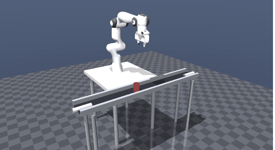
Conveyor
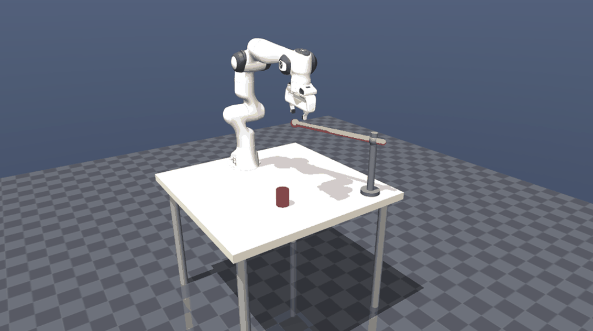
Beam
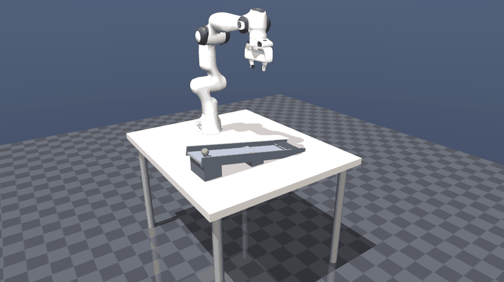
Rolling ball
Occlusion
@inproceedings{syed2026ahead,
title = {Intercepting the Future: Latent-Space Predictive World Model for Dynamic {VLA} Manipulation},
author = {Syed, Shahram Najam and Jakobsson, Arthur and Hao, Haoran and Ichnowski, Jeffrey},
booktitle = {Proceedings of the 10th Conference on Robot Learning ({CoRL} 2026)},
address = {Austin, TX, USA},
year = {2026},
eprint = {2606.02486},
archivePrefix = {arXiv},
primaryClass = {cs.RO},
url = {https://arxiv.org/abs/2606.02486}
}